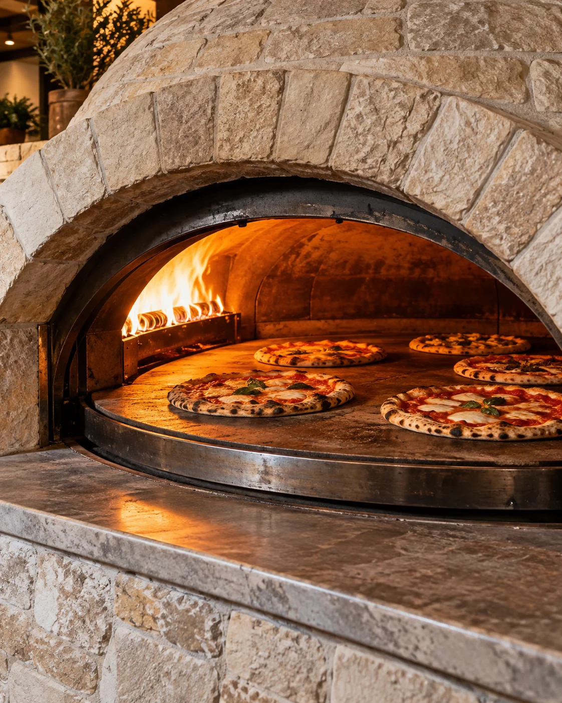
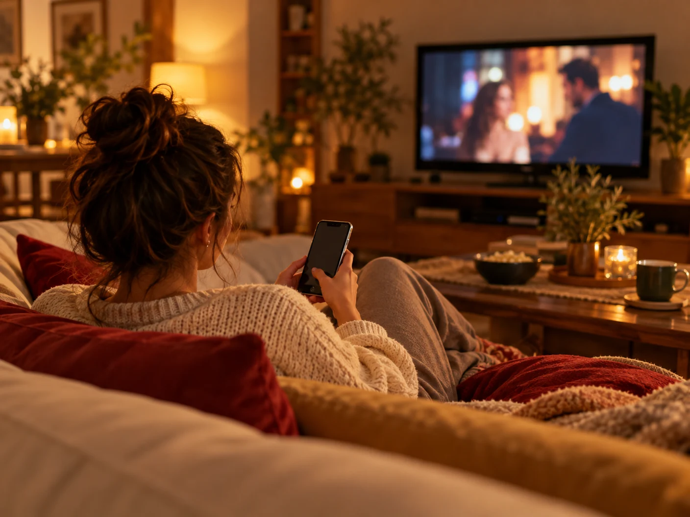

Euro Pizza & Sfizi
L’autentica
pizza barese.
E non solo…
Una serata tranquilla davanti a un bel film o in compagnia di famiglia e amici? Alla pizza pensiamo noi e te la portiamo a casa. Tu rilassati.
Scegli la tua pizza Dai un’occhiata al menu
Hai scelto cosa guardare in TV?
Ora scegli la pizza.
Hai voglia di pizza? Ordina direttamente dal tuo smartphone: scegli i prodotti, aggiungi le tue richieste e inserisci i dati per la consegna.
Il riepilogo si apre su WhatsApp. Invia il messaggio e attendi la conferma della pizzeria.
Ordina oraDal computer? Apri questo sito sullo smartphone per passare più facilmente a WhatsApp. Puoi ordinare anche da qui.

Sei della vecchia scuola?
Preferisci ordinare al telefono? Nessun problema: chiamaci e scegli la tua pizza insieme a noi.
Le parole a tavola.
Uno spazio per le esperienze dei nostri clienti.
Caricamento delle recensioni…
La tua opinione ci aiuta a migliorare.
Ti sei trovato bene? Ci fa piacere saperlo. Qualcosa poteva andare meglio? Raccontacelo: ascoltiamo ogni esperienza e siamo sempre pronti a migliorare.
La prossima fermata?
Euro Pizza & Sfizi.
Trova la pizzeria su Google Maps e scegli il percorso più comodo per raggiungerci.
Indicazioni stradali (apre Google Maps in una nuova scheda)La mappa non si carica? Aprila su Google Maps.